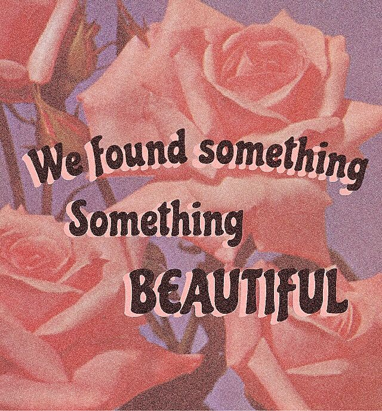

♡♡♡80's fashion♡♡♡
80's fashion was very Retro and vintage. Everything was big, bold, and utterly glamorous.
Fashion
Women in the 80's wore very business for work like:
- wide pants
- dresses
- Skirts
- matching sets
More FASHION
The '80s was a decade of bold style, colors, and permed hair, with trends spanning ripped tights and leather to polished oversized, padded blazers.
💇Hair💇
In the 1980s, women hairstyles were very big and bright colored. They wore long, volumous curled hair. The mullet was a hairstyle that was extremely popular in the '80s. Crimps, Curls, and Perms became even more popular in the 80s. A lot of women, who were blessed to have beautiful curls often teased and spray it to reach incredible heights making those with straight hair do everything to achieve that look. Another hairstyle that was pretty popular at the time was ponytails with scrunchies. A scrunchie is a large, fabric hair-tie, often in bright neon or "hot" colors. Ponytails were usually worn high on the back or side of the head and secured with scrunchies for an overall effect to look fun and carefree. These hairstyles were the center of attention during the 1980s.
{kind=link}
{kind=link}
Shoes
- Capezio Jazz Shoes
- Huaraches
- Dyeable Formal Shoes
{kind=link}
🖤 ♡ 🖤

Copyright (c) 2019. All rights reserved.